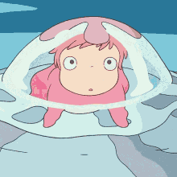

Ponyo
I want ham! Ham! You ate their food. What else did you do? Did you taste blood, Brunhilde? My name is
not Brunhilde. It's Ponyo. Ponyo? Ponyo! Ponyo loves Sosuke! I will be a human, too! Human? What do you know
about humans, Brunhilde? They spoil the sea. They treat your home like their empty, black souls. I was once,
long ago, a human myself. I had to leave that all behind to serve the Earth.